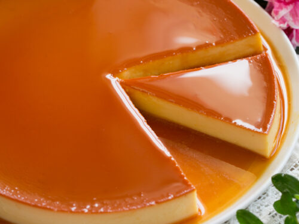

Flan

Flan Recipe
This classic Flan recipe is a silky smooth, classic version of this traditional Latin American dessert. This caramel-topped custard is gently cooked in the oven until it’s firm to the touch.
Ingredients
- Granulated Sugar
- Large Whole Eggs
- Egg Yolks
- Kosher Salt
- Sweetened Condensed Milk
- Evaporated Milk
- Vanilla
Steps
- Make the caramel top
- Pour the caramel into the baking dish or pan
- Make the milk mixture
- Pour the filling over the hardened caramel
- Transfer it to the water bath
- Bake it
- Cool completely
- Remove flan from dish